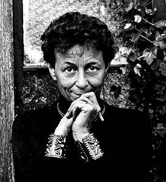

|  | This paper is about the renowned photographer Ruth Bernhard. As a photographer, she ranks with Edward Weston, Ansel Adams, Minor White, and Imogen Cunningham. |
| Book | Author | Publisher |
| Between Art and Life | Margaretta K Mitchell | Chronicle Books |
| The Eternal Body | Margaretta K Mitchell | Chronicle Books |